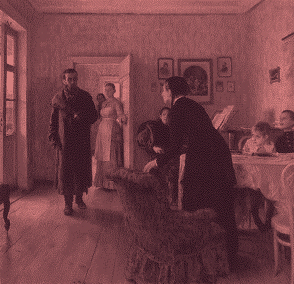

pig
Non-chronological observations from the month of October 2024, i.e., month of the pig in the Korean traditional calendar.Todayis therefore a meaningless word. This will follow a monthly schedule—a concerted effort for myself to write more consistently, and serving as a springboard for longer-form writing. I talk about the usual: minor sadnesses, math, education.
A painting a week
My first traditional painting in a long time; in fact my first painting in a long time. It's hard to tell in the edited image, but this was done on a thin piece of canvas with acrylic paint. Click on the image for a picture more representative of the actual colors. Most of the paint tubes they gave me at the student studio (for free, at least) were unusable, but it was also out of my innate laziness that I decided to use a very limited palette of brown, purple, and yellow.
I hope to do one of these paintings once a week, or once every two weeks at the very least, uploading them to this site. I'd like to finish off this year with a more consistent burst of production—production of anything, whether it be writing, code, or art.
(Green) onions
Vashti’s carrothope (and the related scallionhope) reminded me of this Korean folktale that spears me with sadness whenever I think about it.
The folktale is in fact an origin story of all Koreans. In particular
it is a story of a bear and a tiger who want to become human. In order
to do so, they have to stay inside a cave for 100 days and eat only
green onions garlic for that duration.
The tiger grows impatient and leaves before the 30 days are up; he is condemned to remain a tiger for the rest of his days, despite his earlier transient wishing; meanwhile the bear sticks it out and becomes a human woman who is wedded into a loving family and has kids, a fulfilling rest-of-life, etc.
Everytime I think about this story, I can’t help but think, “I’d be the tiger”. Or, more accurately, “I could never be that bear.” And I become very sad. You can want something so deeply but it doesn’t matter; if you can’t handle the wanting, it’ll never happen. I know that I’ll live as a tiger and die as one too.
Over the summer when I was at my relatives’ house, my cousin told me that the Korean word for onion is “Western green onion”, which made me laugh. I hadn’t noticed it before. Korea is a country in which the green onion is the norm and the onion is the abberation. Of course in English this is flipped.
Math is muscle memory. Math is sedimentation
Observation #1: I recently read on r/math a post from someone who was “sick of having to search things up”; he received advice from many of the members of this subreddit and one of them said that this was a clear sign that he “lacked a couple hundred hours of proof-solving”.
Which makes sense. Let me be reductive here in the spirit of the book I haven’t stopped thinking about ever since I read it: math is doing, math is muscle-memory. Knowledge means nothing if you aren’t able to apply it.
There was a Twitter thread I saw a couple months ago, about how we’ve failed untold numbers of students by tricking them into thinking that math is some sort of abstract symbol-pushing, or that some people are just gifted at math and that others, if they lack this intrinsic gift, shouldn’t even try to continue with it—when in reality, math is muscle memory, a collection of precise mental steps which you learn to apply, like an adjustable wrench (my math professor’s favorite, if not doomed analogy), to a variety of types of problems.
There’s a lot of rinsing and repetition involved. Solving the same problem in several different ways. Writing, rewriting, re-rewriting. It can all seem so redundant, so pointless, so boring.
But iteration leaves behind an infinitesimal layer of knowing. Forgive the tortured analogy, but persistent practice is like a river depositing sediments over millenia, slowly forming a massive, rich, and fertile delta around which civilization can’t help but flourish.
Knowledge accumulates in your brain like the banded strata of the Earth’s crust, but the mechanism by which the accumulation happens is physical practice: writing longhand, with pen or pencil on paper, working it out in front of you piece by piece.
The elite college students who can’t read READMEs
Though I’m just a minor TA for an introductory CS class, what they’re saying is true: students aren’t reading anymore. OK, that was an over-generalization, but if the Atlantic can be dramatic about it, why can’t I?
The READMEs (haha) for the labs/assignments, which admittedly can get slightly wordy, aren’t being read at all. It’s jarring. They’ll be confused about what to do for the assignment without having read the directions. I’ll ask them, “what does this variable do” and they seem unsure of where it’s declared, as if it’s their first time looking at the file.
Hell, the syntax-error explanations in the IDE barely get read; instead they shuffle through every permutation of parenthetical type-casting and pointer deferencing until the red squiggle disappears. It compiled without errors, without warnings even, so it must work!
For a while I thought that the pithy-but-popular remark “the main skill you need as a software developer is the ability to look things up” was an exaggeration, just self-deprecatory good cheer (as if programmers are known for their self-deprecation and cheeriness), but I’m not so sure now.
Add to that my less-than-stellar explanations and I get the feeling that teaching well requires some sort of transcendental aptitude which I sorely lack.
Back in sophomore year I seriously considered leading a small class on shell-scripting and general “computer literacy” in the spirit of MIT’s Missing Semester.
I realise now that it’s not the lack of this potential class that is the issue—all the people I know who are comfortable with their tools—scripting, debugging, tinkering around, et cetera—didn’t need a class to teach them these things. (In fact, a class’s structure would take away from the organic process of experimenting with said tools, right?)
It’s the fact that very, very few people, computer science majors or no, are interested in computer literacy in the first place. Who would spend their time on such a silly thing when you can take version number #15 of an AI/ML elective?
Imagine raging against a machine when said machine can fit in the palm of your hand
I bought a digital watch today, someone’s old Casio. I’ve been slowly divvying up the functionalities that used to all be congealed together inside my smartphone; the watch can also serve as an alarm clock.
I wish sorting out your life was as easy as deciding not to use a smartphone. But the lack of smartphone usage in your life mainly serves to free up those pockets of time you otherwise would’ve spent scrolling.
Though these pockets of time, usually anywhere from thirty seconds up to twenty minutes, can accumulate pretty quickly, until you’re easily looking at a three-plus hour phone screen time daily.
Somehow your phone coaxes you into frittering away hours into a void. These big, dark gouges in your day, none of which you never have any clear recollection of. All iterated throughout the years. How scary is that?
But it’s not like before smartphones became ubiquitous, everyone lived in productivity nirvana with the clearest of brains and intentions. This Tao Lin journal entry from 2005 could’ve been a description of me just yesterday.
That said, reducing your mobile screen time is unequivocally a good thing. Insofar as it affirms to you that nothing inside that palm-sized, flat, and glossy rectangle really matters.
I’ve been thinking about how today’s mindset around tech seems myopic, not even in retrospect. Nowadays, we have access to more compute than ever, but why do we expect for this level of access to improve, or even hold, well into the future?
Learning more about computing in school made me realise how
ridiculous it is that anything works at all. Seeing the great churning
gears of industry, even from afar, made me seriously wonder where we’re
all going with this. What is stronger for me, more than ever, is the skepticism
with which I view the notion of progress
and technological
advancement.
Read these:
- permacomputing i,
- permacomputing ii,
- public domain books to restart computer technology,
- transition engineering,
- deadly optimism, useful pessimism,
- low tech magazine - why we need a speed limit for the internet
Will she ever shut up about math
Today I had a thought spurred by the first Directed Reading Program meeting: if I could sit down around 2 to 3 times a week, and be able to listen to people talk about math that is just at the border of my comprehension (any kind of math), I would be a much happier person. It wouldn’t even be funny. Could some psychiatrist prescribe this to me? I want to be around mathematicians; I sincerely don’t care if I can’t become one myself.
We were standing in a common room in the math department building and a couple other people happened to be in there too; as the grad student lectured, a hush fell over the room. One by one, the others started to listen in as if they couldn’t help themselves. I glanced around to see faces alight with attention and an easy fondness.
It’s been more than half a year since I first talked about wanting to do math (specifically, it was February of this year). And yet my fascination with math still harbors a kiddish giddiness and excitement, underlined by an intense melancholy that it took me so long (just about two entire decades!) to realize that.
I keep going back to some emails I exchanged with holyheart a few months ago:
Rather than rising to the top so you can have everyone and everything underneath you, you’re descending to the very bottom in the hopes of finding some obscure pocket of material that can fill the hole in your heart. But there is no deep secret hidden in mathematics that will save your soul. I reckon it’s not there in philosophy, history, literature, or art either.
I guess being drawn to write about this repetitively stems from the hope that consistent thought and long-term effort will see its hard shell yield to me, like Grothendieck’s nutshell submerged in water. What do I expect to find inside?
daliwali wrote about this here too, saying that:
I don't think that those without mathematical knowledge are missing out on any spiritual insight, despite claims to the contrary.
holyheart and daliwali are probably right. Math won't save you, even though it's easy to think otherwise. After all, how many mathematicians throughout history have ascribed their work to that of God, or the gods?
They did not expect him (Не ждали)

This painting by Ukrainian-born artist Ilya Yefimovich Repin (Илья Ефимович Репин) depicts a haggard man with intense, almost deranged eyes. He is an estranged revolutionary returning home. Each member of the household reacts in their own way upon his sudden arrival.
Without any context, he looks so much like a religious ascetic, gaunt and otherworldly after many days of fasting and prayer. The classic image of a юродивый (holy fool).
We read about the life of the painter Mikhail Alexandrovich Vrubel’ (Михаил Александрович Врубель); the text (in Russian) said that he died after a long and difficult struggle with mental illness. At first I mistranslated since in Russian the term for mental illness is literally spiritual illness (душевная болезнь). And I was so ready to believe that there really were terminal and fatal spiritual illnesses out there, cataloged and examined neatly in medical journals of pathology.